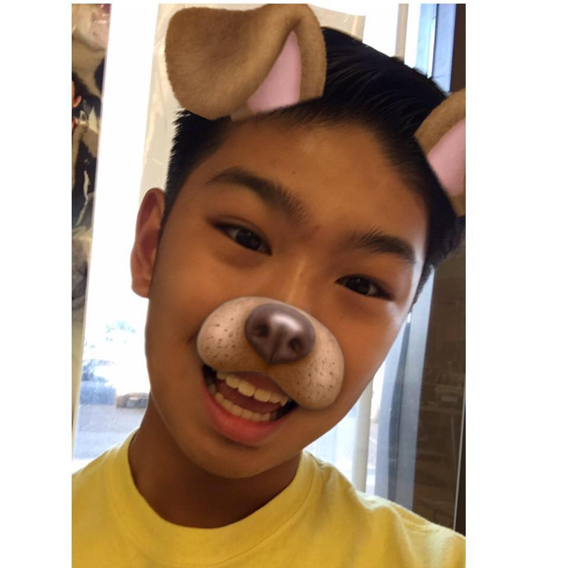
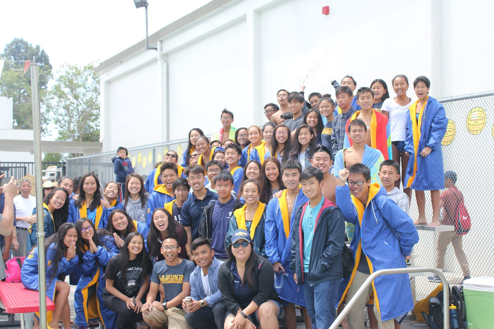
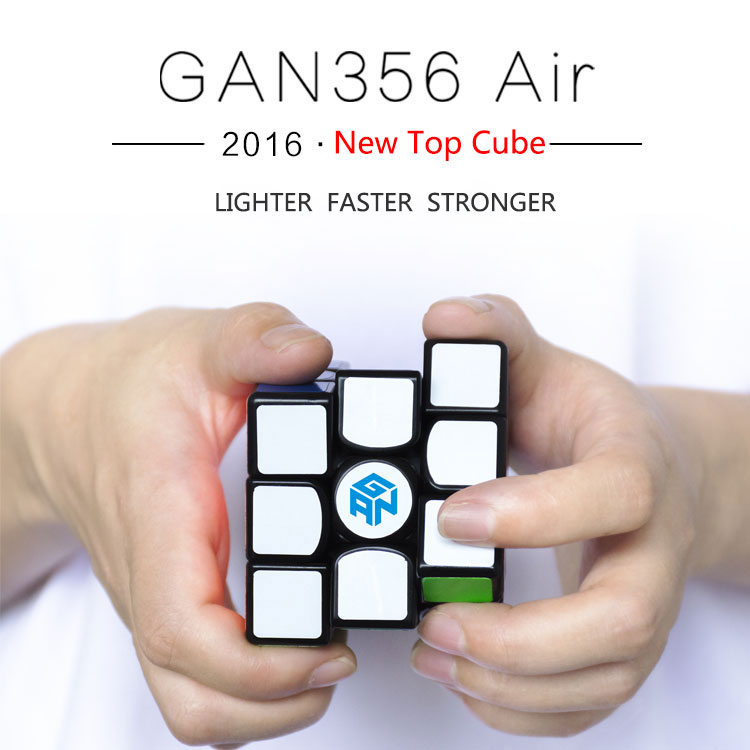

  
Jason Duong | Grade: 10
| Periods | Classes |
|---|---|
| 0 | World History P |
| 1 | Chemistry P |
| 2 | Geometry P |
| 3 | English 2 P |
| 4 | Comp Sci Prn AP |
| 5 | Spanish 2 P |
| 6 | PE Water Polo B |
Favorite Hobbies:
Favorite Songs:
Paragraph About Me:
Hi, my name is Jason Duong. I look forwarding to meeting new people everyday! My goals in life is to achieve a 4.0 in school and to become a successful person. My favorite thing to do besides school is cubing and watching movies. I average around 20 seconds for solving a Rubix Cube. My favorite thing to do in school is Computer Science. Not only do I get to experience the life of coding, but also to learn some useful skill I could be using for life.
Favorite Quote:
"Perfection is not attainable, but if we chase perfection we can catch excellence." - Vince Lombardi